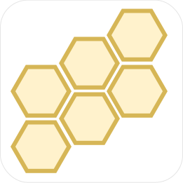

otavia
一个有趣的 IO & Actor 编程模型


这个项目目前处于孵化状态， API 设计还不稳定，请不要用于生产环境中。
Language: English
介绍
otavia 是一个基于 Scala 3 实现的 IO 和 Actor 编程模型，他提供了一系列工具使编写高性能并发程序变得非常容易。
你可以通过以下文档快速的了解 otavia 的基本用法和核心的设计：
您也可以通过本网站的其他文档了解 otavia 中的其他模块。
特性速览
- 全链路异步: 一切都是异步的，没有阻塞，没有线程挂起。
- 忘掉线程、忘掉锁：使用
otavia，你将不再会被多线程问题困扰，你编写的一切代码都是单线程运行的！ - 简化并发:
Actor和Channel让您更加容易构建高性能、易伸缩及更低资源占用的的系统。 - 设计的弹性： 基于《反应性宣言》的原则，
Otavia允许你编写能自我修复的系统，并在面对失败时保持反应。 - 高性能：在几秒钟内创建百万
Actor实例并发送数亿条消息。 - 类型安全：
Actor之间的发送的消息在编译时是类型安全的。 - 零成本 Ask-Pattern：使用 ask 模式发送消息然后接收回复消息就像调用普通方法一样，而且开销非常低。
- Actor 依赖注入：
ActorSystem也被看作是一个Actor实例的容器，开发者可以在编译时类型安全的注入依赖Actor。 - 强大的 IO 栈： IO 栈是从 Netty 移植而来，但支持
AIO和文件通道。 - async/await： 使用
Scala 3的元编程工具实现一套基于 CPS(Continuation Passing Style) 的async/await语法。 - 简洁的线程模型：
otavia运行时的线程模型非常简洁并且高效，让您对系统 CPU 的利用率达到极致！ - 零依赖：核心模块不依赖任何第三方包。
- 开放的生态系统：
otavia提供了一个模块机制，允许用户轻松使用第三方模块库。
生态
otavia 的 IO 栈是从 Netty 移植而来的。为了让 IO 任务更好的与 Actor 模型工作在一起，otavia 并没有与 Netty 完全兼容。值得高兴的是 Netty 生态中大多数应用层网络协议的编解码代码是很容易移植到 otavia 的，所以我们维护了这个生态项目 主要用于从 Netty 以及 Eclipse Vert.x 移植各种应用层网络协议的编解码代码。
贡献
欢迎任何形式的贡献！
In this article